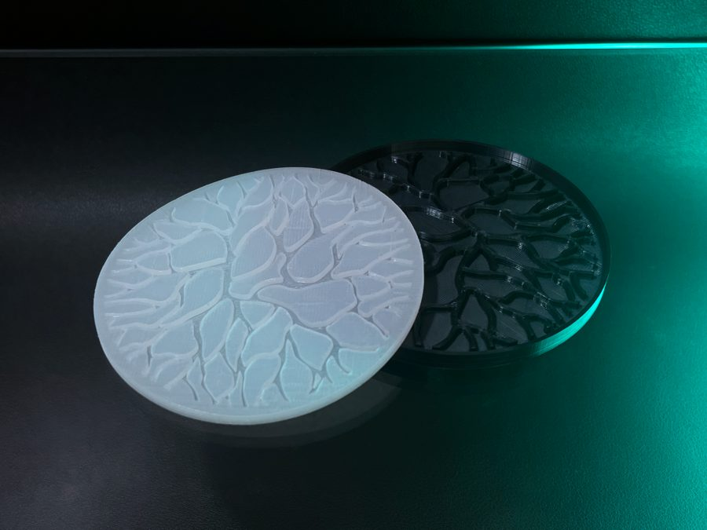
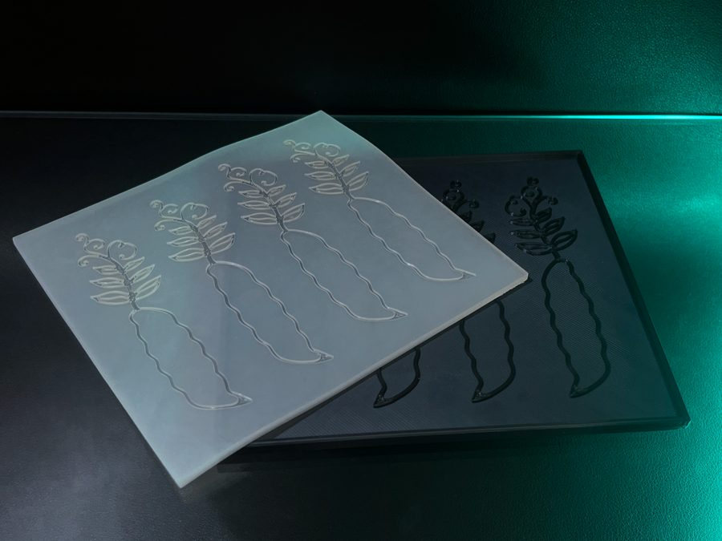
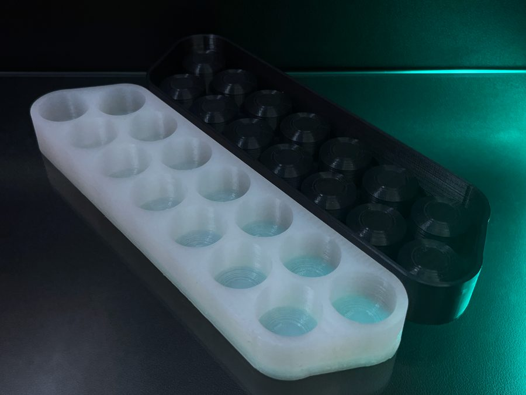
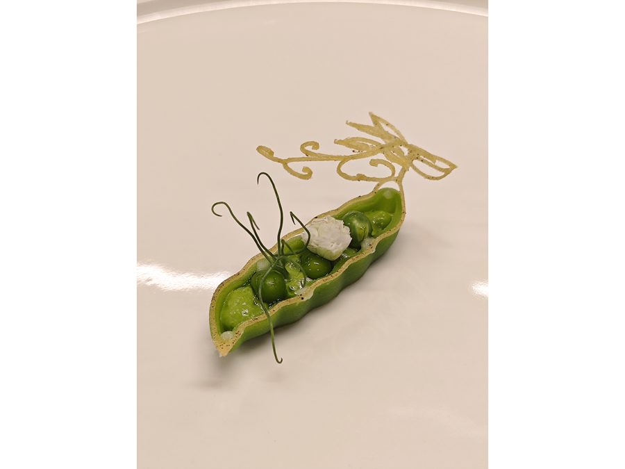

Bespoke culinary design · Estonia
Form beyond imagination.
Custom silicone molds designed for distinctive culinary creations. From first sketch to finished form.
EXPLORE OUR WORK↗
Crafted with purpose
Every detail begins with an idea.
We create custom molds for makers and culinary professionals who want to bring original shapes and textures to life. Each project begins with a unique vision.
Selected portfolio
2024 — 2026Our work.

Precision in repetition
02 / CUSTOM MOLD
Culinary expression
03 / CULINARY APPLICATIONFrom concept to creation.
01
Your idea
Tell us about the shape, intended use and dimensions.
02
Design
We develop the form and discuss practical requirements.
03
Production
The mold is produced for your specific project.
04
Delivery
Your custom piece is prepared for handover.
Bespoke enquiries
Have a vision?
Share your idea and we will discuss the possibilities. This preview does not send requests yet.
REQUEST A CUSTOM MOLD ↗